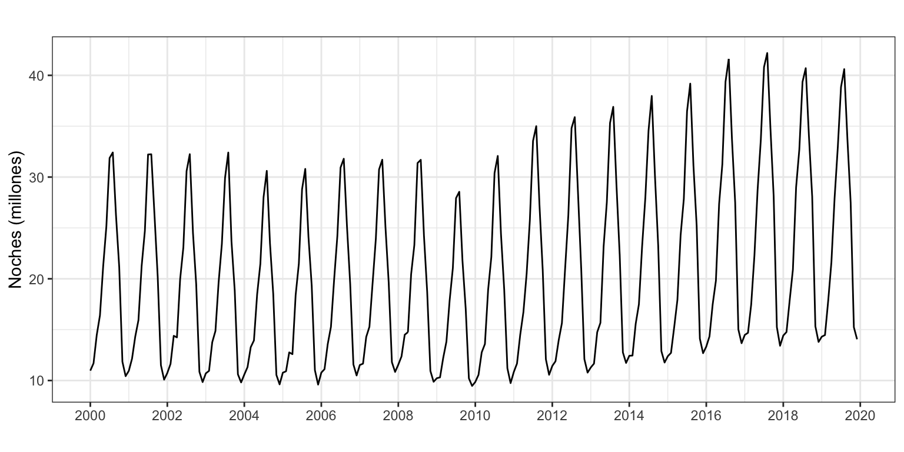
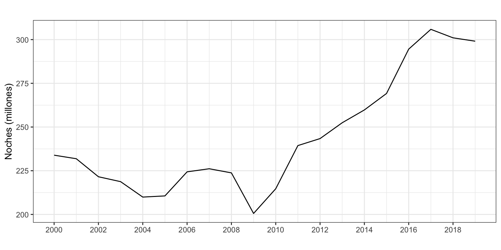
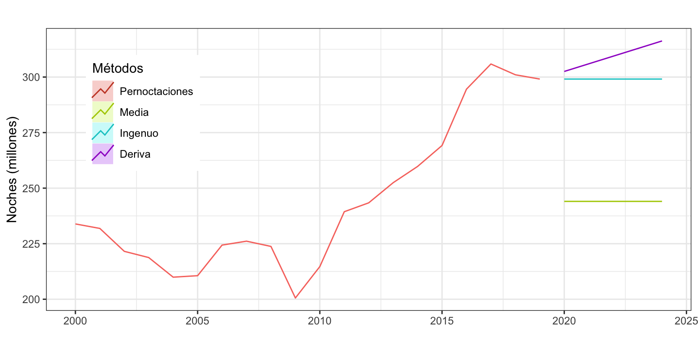
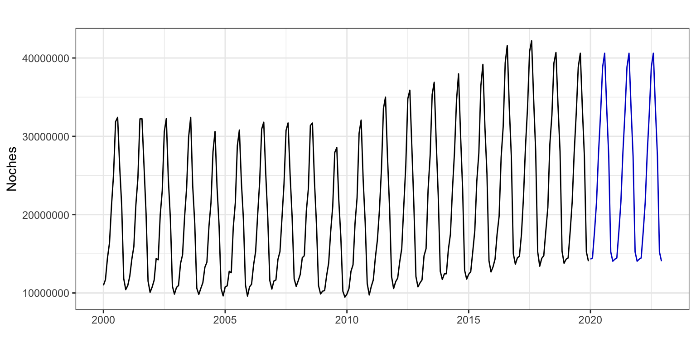
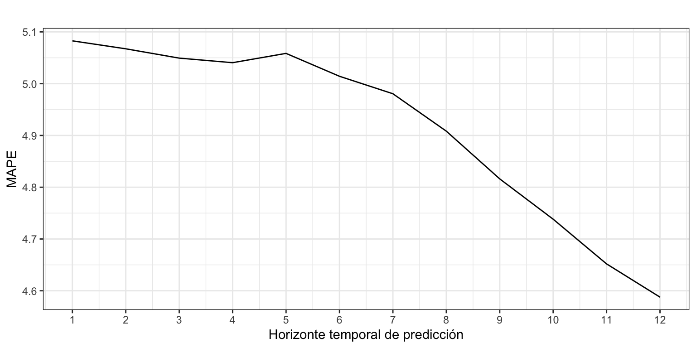

Pernoctaciones en alojamientos turísticos de turistas extranjeros
Métodos sencillos
1 Introducción
Consideremos de nuevo la serie temporal correspondiente al número de pernoctaciones que los turistas extranjeros realizan en España en alojamientos turísticos autorizados (que llamaremos Pernoctaciones en adelante). Esta serie está disponible en Eurostat desde enero de 2000 hasta diciembre de 2019, un total de 20 años y 240 observaciones.
La serie presenta tendencia decreciente hasta finales de la primera década del presente siglo y luego creciente hasta los dos últimos años. La estacionalidad de orden 12 esta determinada por la temperatura. El esquema es multiplicativo.
Pernoctaciones <- read.csv2("./series/Pernoctaciones.csv",
header = TRUE)
Pernoctaciones <- ts(Pernoctaciones[, 2],
start = 2000,
frequency = 12)autoplot(Pernoctaciones/1000000,
xlab = "",
ylab = "Noches (millones)",
main = "") +
scale_x_continuous(breaks= seq(2000, 2020, 2)) 
Vamos a ajustar y predecir esta serie por métodos sencillos. La calidad de ajuste que obtengamos y la capacidad predictiva serán el punto de referencia cuando apliquemos metodologías más complejas de predicción.
2 Predicción por métodos simples para la serie anual
Vamos a empezar considerando la serie anual de Pernoctaciones, en millones, para identificar el método sencillo de predicción más adecuado.
PernoctacionesAnual <- aggregate(Pernoctaciones/1000000, FUN = sum)
autoplot(PernoctacionesAnual,
xlab = "",
ylab = "Noches (millones)",
main = "") +
scale_x_continuous(breaks= seq(2000, 2020, 2)) 
2.1 Identificación del método sencillo con mejor ajuste
Para series sin estacionalidad tenemos tres aproximaciones por métodos sencillos: media simple, método ingenuo I y método de la deriva. Veamos en primer lugar cual de ellos ajusta mejor a los datos, es decir, cual ofrece las mejores predicciones intramuestrales a un periodo vista.
mediaPernoctaciones <- meanf(PernoctacionesAnual, h = 5)
naivePernoctaciones <- naive(PernoctacionesAnual, h = 5)
derivaPernoctaciones <- rwf(PernoctacionesAnual, h = 5, drift = TRUE)
autoplot(PernoctacionesAnual, series = "Pernoctaciones",
xlab = "",
ylab = "Noches (millones)",
main = "") +
autolayer(mediaPernoctaciones, series="Media", PI = FALSE) +
autolayer(naivePernoctaciones, series="Ingenuo", PI = FALSE) +
autolayer(derivaPernoctaciones, series="Deriva", PI = FALSE) +
scale_colour_discrete(limits=c("Pernoctaciones", "Media", "Ingenuo", "Deriva")) +
labs(colour="Métodos") +
theme(legend.position=c(0.15,0.7))
La Figura 3 muestra lo inadecuado del método de la media, y no deja claro entre los métodos Ingenuo y de la Deriva cuál es más adecuado. El primero ofrece una previsión constante –acorde con el comportamiento de la serie en los dos últimos años– y el segundo previsiones crecientes –acordes con la tendencia general de la serie. Veamos la capacidad de ajuste de cada método
tmp <- rbind(
accuracy(mediaPernoctaciones),
accuracy(naivePernoctaciones),
accuracy(derivaPernoctaciones)
)
tmp <- round(tmp,2)
rownames(tmp) <- c("Media","Ingenuo I","Deriva")
tmp ME RMSE MAE MPE MAPE MASE ACF1
Media 0.00 32.54 27.37 -1.67 11.01 2.92 0.86
Ingenuo I 3.43 12.10 9.36 1.16 3.89 1.00 0.26
Deriva 0.00 11.60 9.28 -0.26 3.92 0.99 0.26Tanto el método ingenuo I, como el método de la deriva resultan igualmente buenos respecto a su ajuste a los datos (MAPE de 3.9%). El primero, porque repetir el último dato siempre es una buena estrategia para predicciones a cortísimo plazo. El segundo, porque considerar la pendiente media pasada es también una buena estrategia, que solo fallará en los periodos de cambio de tendencia. Sin embargo, en ningún caso el intervalo de confianza de las predicciones será de utilidad.
2.2 Identificación del método sencillo con mejor predicción extramuestral
Ya hemos visto que para los dos mejores métodos el error es próximo al 3.9%. Este valor es la estimación del error en la previsión intramuestral y a un periodo vista. A fin de poder estimar mejor la capacidad predictiva de los dos métodos vamos a aplicar el método de origen de predicción móvil para obtener los errores extramuestrales según el horizonte de previsión.
Asumiremos que necesitamos 10 años para obtener un buena estimación. La siguiente rutina permite obtener el MAPE para previsiones con un horizonte temporal desde 1 a 5 años.
k <- 10
h <- 5
TT <- length(PernoctacionesAnual)
s <- TT - k - h
mapeNaiveI <- matrix(NA, s + 1, h)
mapeDeriva <- matrix(NA, s + 1, h)
for (i in 0:s) {
train.set <- subset(PernoctacionesAnual, start = i + 1, end = i + k)
test.set <- subset(PernoctacionesAnual, start = i + k + 1, end = i + k + h)
fcast <- naive(train.set, h = h)
mapeNaiveI[i + 1,] <- 100*abs(test.set - fcast$mean)/test.set
fcast <- rwf(train.set, h = h, drift = TRUE)
mapeDeriva[i + 1,] <- 100*abs(test.set - fcast$mean)/test.set
}
mapeNaiveI <- colMeans(mapeNaiveI)
mapeDeriva <- colMeans(mapeDeriva)
mapeNaiveI[1] 4.741687 9.586099 13.225053 16.253007 18.579674mapeDeriva[1] 4.204332 8.547111 11.779166 14.371077 16.222312La conclusión es clara, con independencia del horizonte temporal, el método de la Deriva es el que ofrece las mejores predicciones.
Para el método de la Deriva, el error de previsión extramuestral a un periodo (4.2%) es algo mayor que el error de ajuste (3.9%). Por otro lado, no parece aconsejable utilizar este método para predicciones más allá de dos años vista porque el error porcentual crece rápidamente.
2.3 Predicciones
Una vez identificado el mejor método sencillo de ajuste para la serie anual, mostramos las predicciones numéricamente.1
derivaPernoctaciones Point Forecast Lo 80 Hi 80 Lo 95 Hi 95
2020 302.5235 287.2448 317.8022 279.1567 325.8902
2021 305.9548 283.7862 328.1235 272.0508 339.8589
2022 309.3862 281.5647 337.2076 266.8369 351.9354
2023 312.8175 279.9361 345.6990 262.5297 363.1054
2024 316.2489 278.6601 353.8377 258.7617 373.7360
3 Predicción por el método ingenuo con estacionalidad
Vamos ahora a ajustar y predecir la serie mensual de pernoctaciones por el método más sencillo posible, el método ingenuo con estacionalidad. Recordemos que en este modelo la predicción para un mes consiste en la última observación del mismo mes disponible.
Solicitaremos un horizonte de predicciones de 36 meses h = 36 (aunque solo mostramos los 12 primeros meses).
PernoctacionesPre <- snaive(Pernoctaciones,
h = 36,
level = 0.95)
PernoctacionesPre Point Forecast Lo 95 Hi 95
Jan 2020 14309281 11872181 16746381
Feb 2020 14470122 12033022 16907222
Mar 2020 17825853 15388753 20262953
Apr 2020 21616305 19179205 24053405
May 2020 27967063 25529963 30404163
Jun 2020 32951795 30514695 35388895
Jul 2020 38855835 36418735 41292935
Aug 2020 40609737 38172637 43046837
Sep 2020 33675812 31238712 36112912
Oct 2020 27512907 25075807 29950007
Nov 2020 15242729 12805629 17679829
Dec 2020 14054692 11617592 16491792La calidad del ajuste es bastante buena, con un MAPE de 4.6% y un RMSE de 1.2 millones de pernoctaciones (o 910 mil si usamos el MAE). Sin embargo, el ACF1, cercano a uno es 1, indica que hay mucho rango de mejora en la predicción por intervalo.
accuracy(PernoctacionesPre) ME RMSE MAE MPE MAPE MASE ACF1
Training set 285945.5 1243441 909723.1 1.12597 4.601114 1 0.7869536
La Figura 4 muestra los valores de predicción para los próximos tres años. Observa que las predicciones para 2020, y años siguientes, se mantienen constantes y son iguales a las pernoctaciones de 2019.
autoplot(PernoctacionesPre,
xlab = "",
ylab = "Noches",
main = "",
PI = FALSE)
3.1 Validación
Vamos de nuevo a aplicar el método de origen de predicción móvil para obtener los errores extramuestrales según el horizonte de previsión.
Asumimos que se precisan diez años para hacer una buena estimación, \(k=120\), y que el horizonte temporal es un año, \(h = 12\) meses.
k <- 120
h <- 12
TT <- length(Pernoctaciones)
s <- TT - k - h
mapeSnaive <- matrix(NA, s + 1, h)
for (i in 0:s) {
train.set <- subset(Pernoctaciones, start = i + 1, end = i + k)
test.set <- subset(Pernoctaciones, start = i + k + 1, end = i + k + h)
fit <- snaive(train.set, h = h)
mapeSnaive[i + 1,] <- 100*abs(test.set - fit$mean)/test.set
}
mapeSnaive <- colMeans(mapeSnaive)
mapeSnaive [1] 5.082764 5.067379 5.049382 5.040556 5.058523 5.014313 4.980572 4.908294
[9] 4.816117 4.738261 4.651920 4.587700ggplot() +
geom_line(aes(x = 1:12, y = mapeSnaive)) +
ggtitle("") +
xlab("Horizonte temporal de predicción") +
ylab("MAPE") +
scale_x_continuous(breaks= 1:12)
La Figura 5 muestra el error de previsión extramuestral según el horizonte de previsión. Cuidado con la interpretación. El error prácticamente no varía con el horizonte temporal y se mueve en una estrecha franja de 0.5 puntos porcentuales, entre el 5.1% y el 4.6%. La serie Pernoctaciones es tan sencilla que la mejor predicción a corto plazo es repetir la última observación del mismo mes.
Footnotes
La Covid-19 ha supuesto un shock de una magnitud inesperada en todos los aspectos de la sociedad a nivel mundial y, en concreto, para el turismo nacional e internacional. Es por ello que todas las predicciones que aparecen en este ejemplo de aplicación y los siguientes sobreestimarán enormemente las cifras de Pernoctaciones reales. Cualquier método de predicción asume que las condiciones del entorno en que se aplica no van a cambiar en el futuro.↩︎